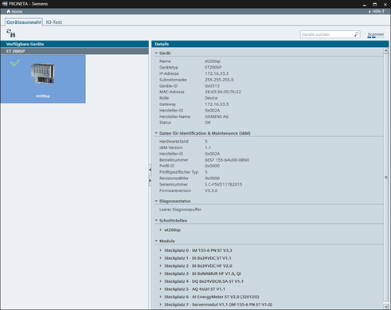

Symbol
Name
Funktion

Aktualisieren
Führt eine sofortige Aktualisierung des Netzwerk-Scans durch.
Der IO-Test dient zur Überprüfung der Verdrahtung eines dezentralen Peripheriegerätes noch vor der Installation einer CPU sowie zur schnellen, fehlerfreien und einfachen Protokollierung der Testergebnisse.
Im Geräteauswahlmodus zeigt PRONETA Basic eine symbolische Darstellung aller SIMATIC ET 200-Geräte, SIRIUS Motorstarter und SIPLUS Heizungssteuerungssysteme an, die während des aktuellen Netzwerk-Scans erkannt wurden.

Ein grünes Häkchen zeigt an, dass dieses Gerät für den IO-Test verfügbar ist (d. h. es verfügt über eine gültige IP-Adresse und einen gültigen Gerätenamen). Wählen Sie durch Klicken das zu testende Gerät aus. Im rechten Bereich des Fensters erscheint bei Auswahl eine Tabelle mit Gerätedetails (Typ, Netzwerkkonfiguration, Port- und Modul-Konfigurationsdaten, etc.) und das ausgewählte Gerät wird mit blauem Hintergrund angezeigt.
Um nach der Auswahl eines Gerätes als Testkandidat mit dem IO-Test fortzufahren, doppelklicken Sie auf das Gerät, oder wählen Sie die Registerkarte „I/O Test“ in der Modusleiste.
Funktionsleiste
Über die Funktionsleiste steht folgende Funktion zur Verfügung:
|
Symbol |
Name |
Funktion |
|
|
Aktualisieren |
Führt eine sofortige Aktualisierung des Netzwerk-Scans durch. |